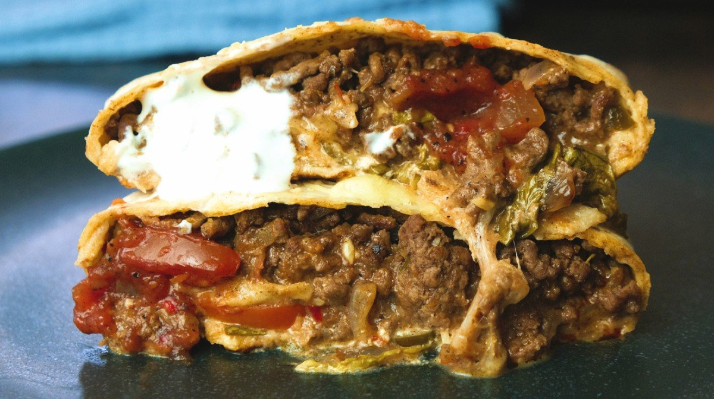

Tacobell Inspired Homemade Beef Wraps

Creator Of The Recipe
Description
Power up your gains with this protein-packed Beef Crunch Wrap, a healthier twist on the fast-food classic. Loaded with lean beef, gooey cheese, and fresh veggies, it’s the perfect post-workout meal to fuel your muscles without compromising your goals. Customizable, quick to make, and irresistibly tasty—your cravings don’t stand a chance
Ingredients
- 1 tbsp. coconut oil
- 500g 5% fat beef mince
- 1 red onion (finely chopped)
- 1 pack of taco seasoning
- 50g light cheddar (grated)
- 100g mozzarella (grated)
- 5 tbsp. salsa
- 100g soured cream
- Jalapeños (chopped)
- Tomato slices
- Lettuce
- 5 tortilla wraps
How To Prepare
- Preheat oven to 200°C/ 400°F.
- Heat the coconut oil in a non-stick pan and add your beef mince. Cook for 5 minutes until brown, then add the onion and continue to cook for 3-4 minutes until onions are soft.
- Add the taco seasoning, stir through and cook for another 5 minutes before removing from heat.
-
To build your crunch wrap, add 2-3 tablespoons of beef mince filling to the centre of your tortilla,
then cheddar and mozzarella on top, followed by salsa, jalapeños, soured cream, tomatoes, and lettuce.
Leave a generous border of tortilla for folding, then fold the edges of tortilla into centre roughly 5-6 times
until the filling is enclosed. Quickly flip your crunch wrap over so the folds are face down and transfer to a baking tray.
- Repeat this process 4 more times, then bake your crunch wraps for 5-10 minutes, until crispy and golden.